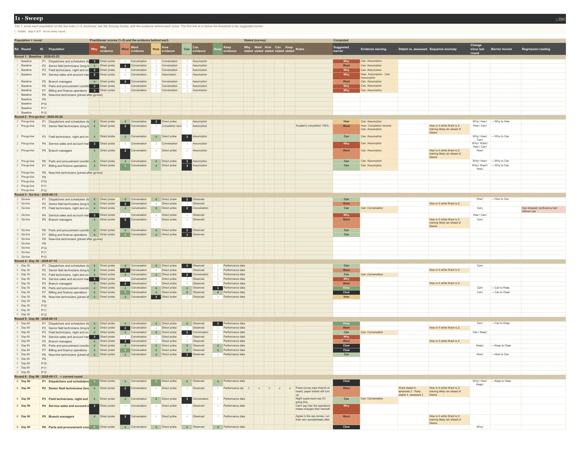
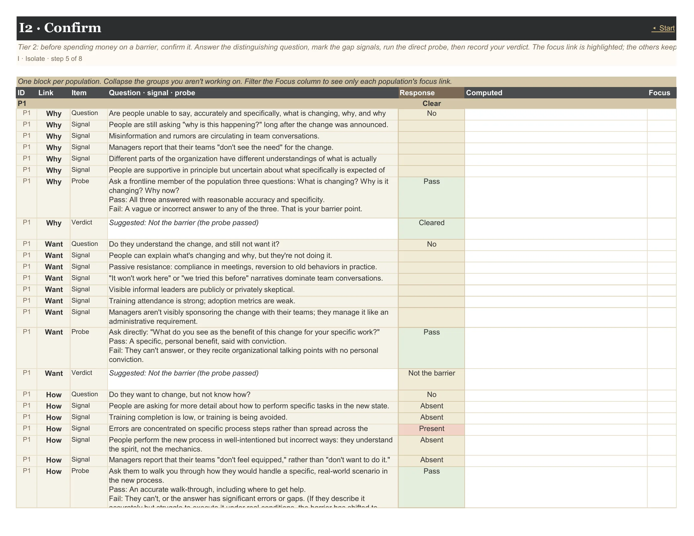

User guide · The tabs
2 tabs: I1 Sweep, I2 Confirm.
Isolate each population's barrier point, then confirm it. The Sweep is a quick, anchored scoring of the five links that suggests the barrier; Confirm is where you prove it with the element's own signals and its un-fakeable direct probe, before anyone spends money on it.
Context (opens in a new tab): The Prescription Trap · Awareness: Build a Change Campaign · Desire: Resistance Is a Design Problem · Knowledge: Why Most Training Programs Are Delivered in the Wrong Order · Ability: Where Change Programs Actually Stall · Reinforcement: The Phase That Determines Whether Change Sticks
On this page: I1 Sweep · I2 Confirm
Tier 1: score each population on the five links (1–5, anchored; see the Scoring Guide), with the evidence behind each score. The first link at or below the threshold is the suggested barrier.
Each round, score every population on the five links, 1 to 5, using the anchors in the Scoring Guide (they also pop up on the score cells). Record the evidence behind each score; the workbook warns when a score rests on evidence that link can't support, like Ability judged from conversation.
Optional stated scores (from a survey or self-report) sit beside yours; a gap of 2 or more, stated higher, flags possible surface compliance. You stay the scorer of record.
The computed columns do the reading: the suggested barrier (the first link at or below the threshold), sequence anomalies ("training likely ran ahead of Desire"), change since last round, whether the barrier moved forward or back, and after go-live a regression reading (Want down, Can down, Why down among new hires).
Rows are grouped by round; collapse the rounds you aren't working on. The current round's rows are highlighted.

Reads from: F1 Setup F2 Populations
| Column | Type | What it means | Values |
|---|---|---|---|
| Population × round | |||
| Rd | computed | ||
| Round | computed | ||
| ID | fixed | ||
| Population | computed | ||
| Practitioner scores (1–5) and the evidence behind each | |||
| Why | input | Why · Awareness: 1 Can't say what is changing. · 2 Knows something is changing; not why. · 3 Can state what and why; not why now or the cost of staying put. · 4 All three, in organizational language. · 5 All three, in their own words, specific to their role. | whole number 1–5 |
| Why evidence | input | Awareness is tested factually: can they answer what, why and why now? A survey or a send count is not evidence. Weak for Why: Survey, Completion records, Assumption. | ObservedDirect probePerformance dataConversationSurveyCompletion recordsAssumption |
| Want | input | Want · Desire: 1 Active or organized opposition. · 2 Passive resistance: agrees in meetings, reverts in practice; "won't work here." · 3 Neutral or surface compliance; can't name a personal benefit. · 4 Supportive; can name a real benefit to their own work. · 5 Advocate: invests discretionary effort, fixes the new way instead of reverting. | whole number 1–5 |
| Want evidence | input | Desire has no un-fakeable question. Cross-check what people say against what they do: attendance vs. adoption, meetings vs. practice. Weak for Want: Survey, Completion records, Assumption. | ObservedDirect probePerformance dataConversationSurveyCompletion recordsAssumption |
| How | input | How · Knowledge: 1 Can't describe the new process. · 2 Gets the spirit, not the mechanics. · 3 Knows the standard steps; not the exceptions or the transition plan. · 4 Walks through a real scenario correctly; knows where to get help. · 5 Handles exception scenarios correctly. | whole number 1–5 |
| How evidence | input | Completion is not comprehension. Test with a real scenario, not a course record. Weak for How: Completion records, Survey, Assumption. | ObservedDirect probePerformance dataConversationSurveyCompletion recordsAssumption |
| Can | input | Can · Ability: 1 Can't execute, even with support. · 2 Executes with heavy support; frequent errors. · 3 Standard cases with support; escalates exceptions (the day-1 to day-30 milestone). · 4 Independent on standard cases and most exceptions (day 60). · 5 Fully proficient under real conditions (day 90). | whole number 1–5 |
| Can evidence | input | Ability requires observation, not conversation. People over-report competence; watch them do the work. Weak for Can: Conversation, Survey, Completion records, Assumption. | ObservedDirect probePerformance dataConversationSurveyCompletion recordsAssumption |
| Keep | input | Keep · Reinforcement: 1 Reverted, or running a hybrid. · 2 Drifting: workarounds reappearing, old metrics in place. · 3 Holding, but only because of project support. · 4 Metrics and SOPs updated; governance active. · 5 The new way is the default, locked in structurally; new hires start on it. | whole number 1–5 |
| Keep evidence | input | Reinforcement is read from data over time: metrics, compliance trends and round-over-round scores. Weak for Keep: Conversation, Completion records, Assumption. | ObservedDirect probePerformance dataConversationSurveyCompletion recordsAssumption |
| Stated (survey) | |||
| Why stated | input | Stated readiness from a survey or self-report. Evidence, never the score of record. | whole number 1–5 |
| Want stated | input | Stated readiness from a survey or self-report. Evidence, never the score of record. | whole number 1–5 |
| How stated | input | Stated readiness from a survey or self-report. Evidence, never the score of record. | whole number 1–5 |
| Can stated | input | Stated readiness from a survey or self-report. Evidence, never the score of record. | whole number 1–5 |
| Keep stated | input | Stated readiness from a survey or self-report. Evidence, never the score of record. | whole number 1–5 |
| Notes | input | ||
| Computed | |||
| Suggested barrier | computed | The first link at or below the threshold (F1 Setup). 'Not yet assessed' when an earlier link is blank. Keep may be blank before go-live. | |
| Evidence warning | computed | A score resting on evidence that link can't support: Ability from conversation, Knowledge from completion records, anything from assumption. | |
| Stated vs. assessed | computed | Stated (survey or self-report) at least 2 above your score: possible surface compliance. You stay the scorer of record. | |
| Sequence anomaly | computed | A later link scored well above the barrier. It can't be read reliably until the barrier clears. | |
| Change since last round | computed | ||
| Barrier moved | computed | Forward is progress. Back is regression: a new diagnosis. | |
| Regression reading | computed | After go-live: Want down = reinforcement regression; Can down = proficiency lost without use; Why down = onboarding gap (Reinforcement article). | |
Tier 2: before spending money on a barrier, confirm it. Answer the distinguishing question, mark the gap signals, run the direct probe, then record your verdict. The focus link is highlighted; the others keep their history.
For each population, every link has its distinguishing question, its gap signals and its direct probe, the one test that can't be faked. Work the focus link first (the highlighted one: the confirmed barrier, or the suggested one until you confirm), then record your verdict.
The workbook suggests a verdict: confirmed if the probe fails, or if three or more signals are present and the question is Yes. It also spots the Knowledge-to-Ability shift: people who can describe the new process but not execute it.
Marking a link Cleared moves the diagnosis forward. The first link with the verdict Confirmed barrier becomes the population's confirmed barrier everywhere; all five Cleared or Not the barrier makes it Clear.

Reads from: F1 Setup F2 Populations I1 Sweep
| Column | Type | What it means | Values |
|---|---|---|---|
| One block per population. Collapse the groups you aren't working on. Filter the Focus column to see only each population's focus link. | |||
| ID | fixed | ||
| Link | fixed | ||
| Item | fixed | ||
| Question · signal · probe | computed | ||
| Response | input | QuestionYesNoUnsure SignalPresentAbsentUnknown ProbePassFailNot run VerdictConfirmed barrierNot the barrierClearedNot assessed | |
| Computed | computed | ||
| Focus | computed | ||
What each score looks like, link by link. The same text pops up on the I1 Sweep score cells and fills the Scoring Guide tab.
| Link | 1 | 2 | 3 | 4 | 5 |
|---|---|---|---|---|---|
| Why Awareness | Can't say what is changing. | Knows something is changing; not why. | Can state what and why; not why now or the cost of staying put. | All three, in organizational language. | All three, in their own words, specific to their role. |
| Want Desire | Active or organized opposition. | Passive resistance: agrees in meetings, reverts in practice; "won't work here." | Neutral or surface compliance; can't name a personal benefit. | Supportive; can name a real benefit to their own work. | Advocate: invests discretionary effort, fixes the new way instead of reverting. |
| How Knowledge | Can't describe the new process. | Gets the spirit, not the mechanics. | Knows the standard steps; not the exceptions or the transition plan. | Walks through a real scenario correctly; knows where to get help. | Handles exception scenarios correctly. |
| Can Ability | Can't execute, even with support. | Executes with heavy support; frequent errors. | Standard cases with support; escalates exceptions (the day-1 to day-30 milestone). | Independent on standard cases and most exceptions (day 60). | Fully proficient under real conditions (day 90). |
| Keep Reinforcement | Reverted, or running a hybrid. | Drifting: workarounds reappearing, old metrics in place. | Holding, but only because of project support. | Metrics and SOPs updated; governance active. | The new way is the default, locked in structurally; new hires start on it. |
| Evidence type | What it is | Why | Want | How | Can | Keep |
|---|---|---|---|---|---|---|
| Observed | You watched the work. | ✓ | ✓ | ✓ | ✓ | ✓ |
| Direct probe | You ran the element's test question or scenario. | ✓ | ✓ | ✓ | ✓ | ✓ |
| Performance data | Metrics, error rates, compliance, process mining. | ✓ | ✓ | ✓ | ✓ | ✓ |
| Conversation | What people told you in interviews or dialogues. | ✓ | ✓ | ✓ | ✗ weak | ✗ weak |
| Survey | Self-reported, often what people think the business wants to hear. | ✗ weak | ✗ weak | ✗ weak | ✗ weak | ✓ |
| Completion records | Attendance or course completion. Activity, not evidence of understanding. | ✗ weak | ✗ weak | ✗ weak | ✗ weak | ✗ weak |
| Assumption | Not yet evidenced. | ✗ weak | ✗ weak | ✗ weak | ✗ weak | ✗ weak |
Distinguishing question: Are people unable to say, accurately and specifically, what is changing, why, and why now?
Gap signals
Direct probe: Ask a frontline member of the population three questions: What is changing? Why is it changing? Why now?
Pass: All three answered with reasonable accuracy and specificity.
Fail: A vague or incorrect answer to any of the three. That is your barrier point.
Awareness is tested factually: can they answer what, why and why now? A survey or a send count is not evidence. · Awareness: Build a Change Campaign
Distinguishing question: Do they understand the change, and still not want it?
Gap signals
Direct probe: Ask directly: "What do you see as the benefit of this change for your specific work?"
Pass: A specific, personal benefit, said with conviction.
Fail: They can't answer, or they recite organizational talking points with no personal conviction.
Desire has no un-fakeable question. Cross-check what people say against what they do: attendance vs. adoption, meetings vs. practice. · Desire: Resistance Is a Design Problem
Distinguishing question: Do they want to change, but not know how?
Gap signals
Direct probe: Ask them to walk you through how they would handle a specific, real-world scenario in the new process.
Pass: An accurate walk-through, including where to get help.
Fail: They can't, or the answer has significant errors or gaps. (If they describe it accurately but struggle to execute it under real conditions, the barrier has shifted to Ability.)
Completion is not comprehension. Test with a real scenario, not a course record. · Knowledge: Why Most Training Programs Are Delivered in the Wrong Order
Distinguishing question: Do they want to and know how, but struggle to do it consistently under real conditions?
Gap signals
Direct probe: Watch them execute a real task in the new process. Don't ask; observe.
Pass: Execution matches their description of the process, without guidance.
Fail: The gap between how they describe the process and how they execute it shows exactly where Ability is missing.
Ability requires observation, not conversation. People over-report competence; watch them do the work. · Ability: Where Change Programs Actually Stall
Distinguishing question: Were they doing it, and have they drifted back?
Gap signals
Direct probe: Re-run the same assessment you ran at go-live, with the same population, and compare.
Pass: Scores held or improved.
Fail: Want dropped (they stopped wanting to maintain it), Can dropped (proficiency lost without use), or Why dropped among new hires and transfers (an onboarding gap).
Reinforcement is read from data over time: metrics, compliance trends and round-over-round scores. · Reinforcement: The Phase That Determines Whether Change Sticks